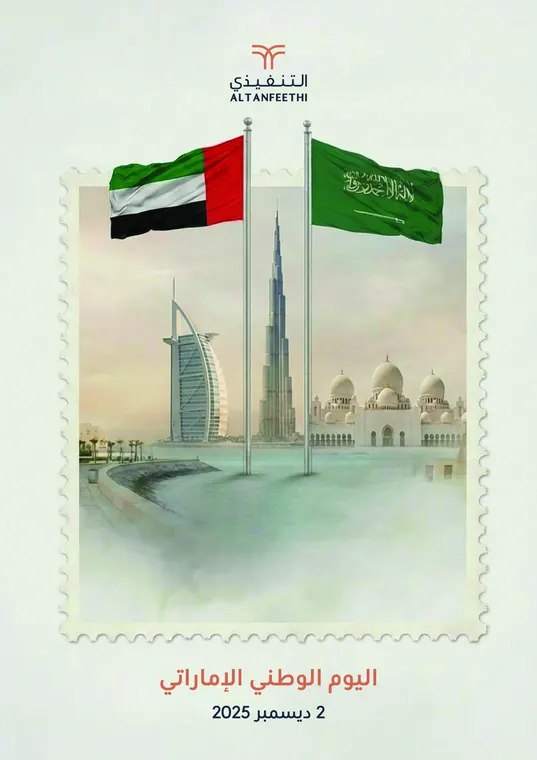
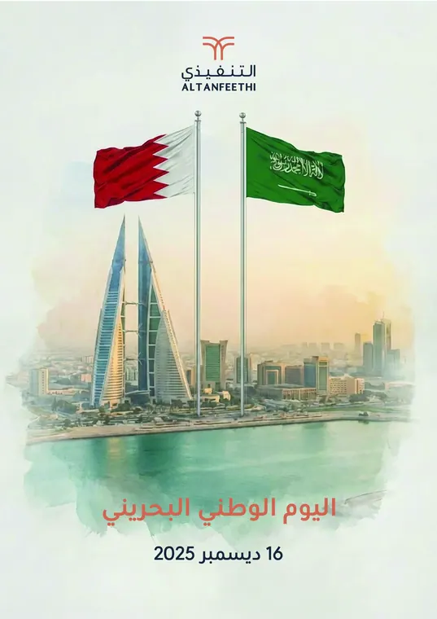
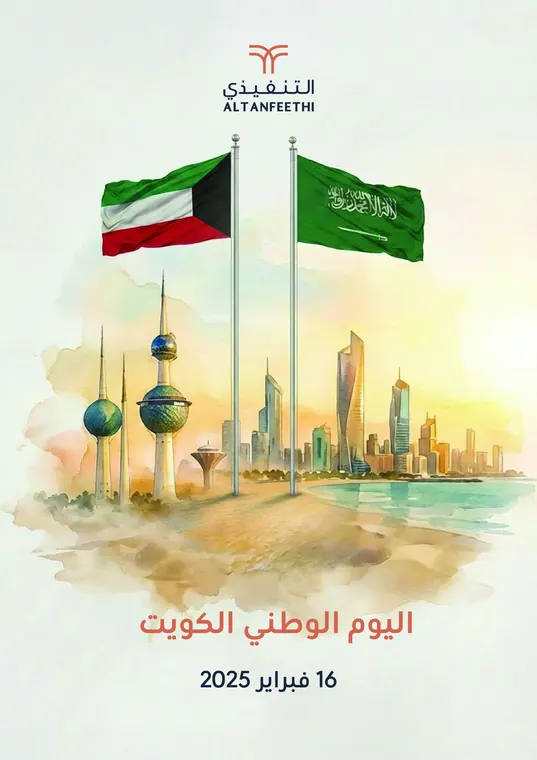
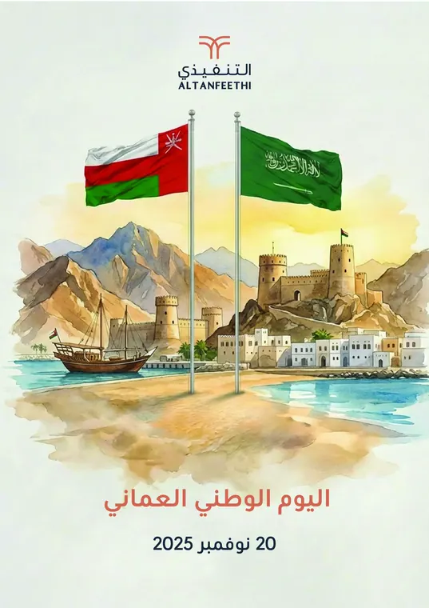
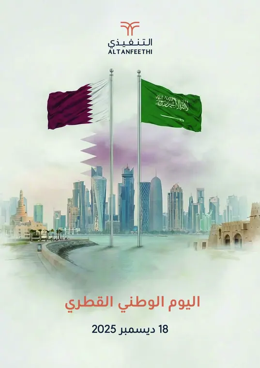
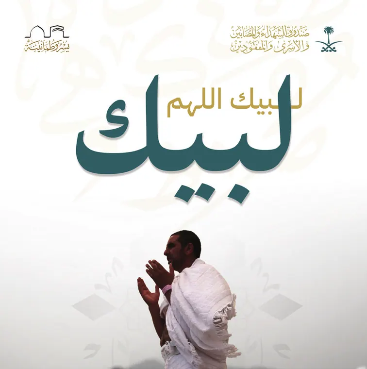

Gulf National Days
A card for every neighbour.
A social campaign congratulating the Gulf states on their national days. Each watercolour card sets the neighbour’s flag beside the Saudi flag above an iconic skyline, so five countries read as one gesture.
- Client
- Altanfeethi
- Role
- Campaign design
- Scope
- 5 national day cards
Two flags, one gesture.
- The objective
- Congratulate the Gulf states on their national days and express Saudi brotherhood.
- The idea
- The neighbour’s flag beside the Saudi flag, above that country’s iconic skyline.
- Visual direction
- Hand-painted watercolour for a warm, human feel, with one composition for all five cards.





